| subject | chocolate | happiness |
|---|---|---|
| 1 | 87 | 50 |
| 2 | 2 | 25 |
| 3 | 63 | 15 |
| 4 | 100 | 50 |
| 5 | 73 | 98 |
| 6 | 76 | 87 |
| 7 | 5 | 4 |
| 8 | 47 | 80 |
| 9 | 21 | 36 |
| 10 | 3 | 5 |
2 Correlation
Correlation doesn’t imply causation, but it does waggle its eyebrows suggestively and gesture furtively while mouthing ‘look over there’.
Randall Munroe, xkcd #552, “Correlation” (2009)
Chapter 1 worked with one variable at a time. It covered the center in full (mean, median, mode) and gave a first, rough measure of spread, the range. Many interesting questions are about whether two variables move together. Does ozone rise on hotter days? Do wetter winters produce taller trees?
The chapter starts with what two related variables look like side by side, in a scatter plot. It then builds the measure of differentness that Chapter 1 promised, to replace the range. That same measure, extended to two variables, gives us covariance, then Pearson’s \(r\), a first look at regression, and finally the specific ways a correlation can mislead you.
2.1 What data look like when one thing changes another
This section shows how to recognize when two things move together in a set of data. Sometimes that reflects a cause-and-effect relationship, and sometimes it doesn’t. The last section of this chapter shows several ways a correlation can appear without one.
2.1.1 More chocolate = more happiness?
Suppose that having more chocolate causes a person to be happier, and having less chocolate makes them less happy. Happiness also depends on plenty of other things in a person’s life, so we’d expect more chocolate to go with more happiness on average, but not as a perfect one-to-one match.
Our first step is to collect data from 100 people. We walk around and ask the first 100 people we meet to answer two questions:
- how much chocolate do you have? and
- how happy are you?
For convenience, both the scales will go from 0 to 100. For the chocolate scale, 0 means no chocolate, 100 means lifetime supply of chocolate. Any other number is somewhere in between. For the happiness scale, 0 means no happiness and 100 means all of the happiness.
The numbers in this example are invented. We built them so that each extra unit of chocolate adds 0.6 units of happiness on average, plus other influences. Here are the first 10 subjects.
Each subject has two scores, one for chocolate supply and one for happiness. Some relationship between them may already show in the table, and a graph of all 100 subjects makes it clearer.
2.1.2 Scatter plots
When you have two measurements for each subject, you can plot them in a scatter plot. A scatter plot shows each subject as one dot, placed by one measurement on the horizontal x-axis and the other measurement on the vertical y-axis. Either measurement can go on either axis. We put chocolate supply on the x-axis and happiness level on the y-axis. Figure 2.1 shows all 100 subjects.
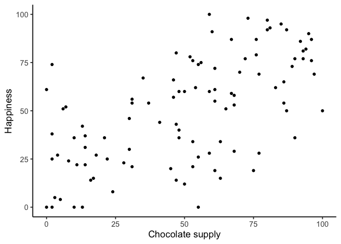
The dots rise from the lower left to the upper right. People with less chocolate tend to report lower happiness, while those with more chocolate tend to report higher happiness. A correlation is a relationship in which values of one variable tend to go with values of another. A positive correlation is one in which higher values of one variable tend to go with higher values of the other.
2.1.3 Positive, negative, and no correlation
Two other patterns are possible: a reversed relationship, where more chocolate means less happiness, and no relationship at all, where chocolate supply has nothing to do with happiness. Figure 2.2 shows all three side by side:
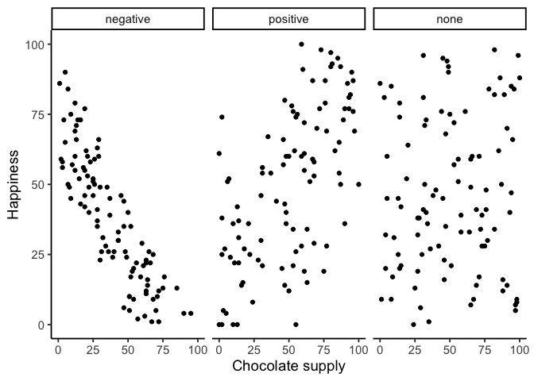
The first panel shows a negative correlation. A negative correlation is a relationship in which higher values of one variable tend to go with lower values of the other. Here happiness goes down as chocolate supply increases. The second panel shows a positive correlation. The third panel shows no correlation. No correlation means that changes in one variable do not go with any consistent change in the other.
2.2 How much does one variable vary?
Before we can measure how two variables move together, we need the measure of differentness that Chapter 1 promised, a number for how much a single variable varies. The same calculation, applied to two variables at once, gives covariance, so we build it here and extend it in the next section.
2.2.1 Pairwise differences
One way to summarize the amount of differentness in the data is to compare every number to every other number. Pick a first number, pick a second number, and subtract them. For the numbers 6 and 1, \(6 - 1 = 5\). The difference says how far apart those two numbers are. Do that across a whole dataset and you have a complete picture of how different every number is from every other number.
Pairwise comparisons have two problems. The first is the count, which grows fast. 10 numbers means 10 × 10 = 100 comparisons, and 500 numbers means 500 × 500 = 250,000. The second is that the positive and negative differences cancel out. Every \(6 - 1 = 5\) has a matching \(1 - 6 = -5\), so the average of all the differences is zero no matter what the data look like. A much simpler approach compares each score to one reference point, the mean.
2.2.2 The variance
We have used the words variability, variation, and variance a lot, and all three refer to the same idea, that numbers differ. The word variance does double duty, though. Loosely it means that general idea. Precisely it names a specific statistic, the mean of the squared deviations from the mean.
A score’s deviation score is the score minus the mean, \(x_i - \bar{x}\), where \(x_i\) is one score and \(\bar{x}\) is the mean (Chapter 1). To calculate the variance, find each score’s deviation score, square those deviations, then average them. Squaring stops positive and negative deviations from canceling. In short:
\(\text{variance} = \frac{\text{Sum of squared deviation scores}}{\text{Number of Scores}}\)
Chapter 3 explains when to divide by \(N\) (when you have the entire population) and when to divide by \(n-1\) (when you only have a sample, which is almost always the case). In this chapter, we divide by \(N\).
Deviations from the mean.
The next few steps build the variance formula above one piece at a time. First, find the mean and subtract it from every score. The result tells us both how well the mean represents the data and how much spread there is around it.
| scores | values | mean | Difference_from_Mean |
|---|---|---|---|
| 1 | 1 | 5 | -4 |
| 2 | 2 | 5 | -3 |
| 3 | 6 | 5 | 1 |
| 4 | 7 | 5 | 2 |
| 5 | 9 | 5 | 4 |
| Sums | 25 | 25 | 0 |
| Means | 5 | 5 | 0 |
The mean here is
\[\bar{x} = \frac{1+2+6+7+9}{5} = \frac{25}{5} = 5.\]
The third column repeats the mean on every row. That shows the point from Chapter 1 that the mean spreads the total evenly, because five copies of 5 add back to the original total of 25. The fourth column is the deviation score, \(x_{i}-\bar{x}\). The score of 1 is 4 below the mean and the score of 6 is 1 above it.
The deviations sum to zero. In the table, the two negative deviations add to \(-7\) and the three positive ones add to \(7\), so the Sums row shows 0. A total of zero would suggest there is no variation at all, but the scores run from 1 to 9. Squaring will fix the cancellation, but first we look at why it happens.
Mean as the balancing point.
The mean is the balancing point of the data. The values below it are, in total, exactly as far below it as the values above it are above it. For our five scores, those totals are the 7 and the 7 from the deviations table.
The deviations always sum to zero because of how the mean is built. Adding up the deviations gives the sum of the scores minus \(N\) copies of the mean, and \(N\) copies of the mean add up to the sum of the scores: \(\sum(x_i - \bar{x}) = \sum x_i - N\bar{x} = 0\). For the table above, \(25 - 5 \times 5 = 0\).
Figure 2.3 plots the same five values, \(X = (1,2,6,7,9)\), on a number line.
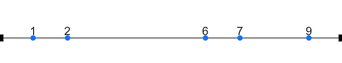
Now imagine the number line as a teeter-totter. In Figure 2.4, the board balances only when the fulcrum is at 5, the mean.
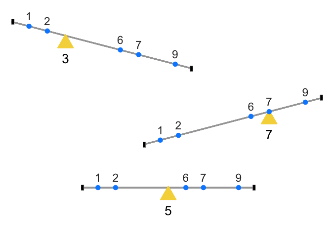
The mean is the only value for which the sum of deviations equals zero. Write \(a\) for any candidate balancing point. The sum of deviations from \(a\) is \(\sum(x_i - a) = \sum x_i - Na\). That sum is zero only when \(Na = \sum x_i\), so \(a = \sum x_i / N\), which is the mean.
Because the deviations always cancel, their sum cannot summarize variation, so we need a way around the cancellation.
The squared deviations.
The standard trick is to square the deviations. Since \(2^2 = 4\) and \((-2)^2 = 4\), squaring turns every negative into a positive, so the deviations can no longer cancel. We call these squared deviations. Here is the same table with a column for them:
| scores | values | mean | Difference_from_Mean | Squared_Deviations |
|---|---|---|---|---|
| 1 | 1 | 5 | -4 | 16 |
| 2 | 2 | 5 | -3 | 9 |
| 3 | 6 | 5 | 1 | 1 |
| 4 | 7 | 5 | 2 | 4 |
| 5 | 9 | 5 | 4 | 16 |
| Sums | 25 | 25 | 0 | 46 |
| Means | 5 | 5 | 0 | 9.2 |
The first score of 1 is 4 below the mean, so its deviation is \(-4\) and its squared deviation is \((-4)^2 = 16\). Now that nothing is negative, we can add them up. The sum of squares (SS) is the total of the squared deviations from the mean. For these five scores it is \(16 + 9 + 1 + 4 + 16 = 46\). The formula is
\[SS = \sum_{i=1}^{N}(x_{i}-\bar{x})^2\]
You will meet this quantity again in Chapters 8 and 9, and it is always this sum of squared deviations.
Finally, the variance.
The goal was a single number summarizing spread, but deviations give us as many numbers as we have data points, so we want their average. The variance is the mean of the squared deviations, which is the sum of squares divided by the number of scores:
\[\text{variance} = \frac{SS}{N}\]
For our data it comes to \(46 / 5 = 9.2\). On its own that number is hard to interpret, because squaring the deviations put it on a squared scale, so it is no longer in the same units as the data. The fix is to take the square root, \(\sqrt{9.2} \approx 3.03\).
2.2.3 The standard deviation
The standard deviation (SD) is the square root of the variance. It is in the units of the data and gives the typical size of a deviation from the mean:
\[\text{standard deviation} = \sqrt{\text{variance}} = \sqrt{\frac{SS}{N}} = \sqrt{\frac{\sum_{i=1}^{N}(x_{i}-\bar{x})^2}{N}}\]
Our standard deviation of 3.03 is easier to read than the variance. The deviations in the table range in size from 1 to 4. A variance of 9.2 is larger than every one of them because it is on the squared scale, while an SD of 3.03 falls within that range and lines up with the actual deviations.
Told only that a dataset has a mean of 5 and an SD of 3.0, you can picture values clustered around 5, with a typical spread of about three units either way.
2.2.4 Mean absolute deviation
So far we’ve handled the “differences cancel out” problem by squaring deviations. Another way around the problem is to take the absolute value of each deviation from the mean, so a deviation of \(-4\) becomes 4. That way, every difference becomes positive, and when we add them up we don’t end up at zero.
Table 2.4 adds a column of absolute deviations for the same five scores.
| scores | values | mean | Difference_from_Mean | Absolute_Deviations |
|---|---|---|---|---|
| 1 | 1 | 5 | -4 | 4 |
| 2 | 2 | 5 | -3 | 3 |
| 3 | 6 | 5 | 1 | 1 |
| 4 | 7 | 5 | 2 | 2 |
| 5 | 9 | 5 | 4 | 4 |
| Sums | 25 | 25 | 0 | 14 |
| Means | 5 | 5 | 0 | 2.8 |
The mean absolute deviation (MAD) is the mean of the absolute deviations from the mean. For these five scores the absolute deviations add to 14, so the MAD is \(14 / 5 = 2.8\). Like the standard deviation (3.03 here), the MAD measures the typical size of a deviation from the mean, but without squaring. Squaring gives large deviations more weight, so the SD is never smaller than the MAD for the same scores. Squaring is more common because the sum of squares is what ANOVA and regression are built on (Chapters 8 and 9), but the MAD is easier to read as the average distance from the mean.
R’s mad() function computes a different statistic, the median absolute deviation, so use mean(abs(x - mean(x))) for the MAD.
Table 2.5 sets the range from Chapter 1 beside the three measures from this section, all computed for the same five scores.
| Measure | How it is computed | Value | Units | Uses every score? |
|---|---|---|---|---|
| Range | largest minus smallest | 8 | data units | No |
| Variance | mean of squared deviations | 9.2 | squared units | Yes |
| Standard deviation | square root of the variance | 3.03 | data units | Yes |
| Mean absolute deviation | mean of absolute deviations | 2.8 | data units | Yes |
2.3 Covariance
We now have a number for how one variable varies. Covariance is the same idea for two variables. It is the mean of the products of paired deviations, \((x_i - \bar{x})(y_i - \bar{y})\). Its sign tells us whether being above the mean on \(X\) tends to come with being above the mean on \(Y\) (positive), below the mean on \(Y\) (negative), or neither (near zero).
In our chocolate–happiness example, the scatter plot suggested that higher chocolate tends to come with higher happiness. So a person above the chocolate mean is usually also above the happiness mean, and a person below one mean is usually below the other. Their two deviations then have the same sign, and multiplying them gives a positive number. Covariance is built from those products, so it is positive.
Covariance underlies correlation, regression, and many other statistical tools. Pearson’s \(r\), later in this section, is the covariance divided by the two standard deviations.
NoteNote: Covariance as two people walking side by side
Picture two people walking side by side. If they step forward and back in step, their movements have positive covariance. If one steps forward whenever the other steps back, their movements have negative covariance. If their steps have no pattern, their covariance is near zero.
2.3.1 Turning the numbers into a measure of covariance
Covariance multiplies deviations from the mean, but the idea is easier to see with raw scores first. This subsection multiplies the raw chocolate and happiness scores of the first 10 subjects, and the next subsection replaces them with deviations.
| subject | chocolate | happiness | Chocolate_X_Happiness |
|---|---|---|---|
| 1 | 87 | 50 | 4350 |
| 2 | 2 | 25 | 50 |
| 3 | 63 | 15 | 945 |
| 4 | 100 | 50 | 5000 |
| 5 | 73 | 98 | 7154 |
| 6 | 76 | 87 | 6612 |
| 7 | 5 | 4 | 20 |
| 8 | 47 | 80 | 3760 |
| 9 | 21 | 36 | 756 |
| 10 | 3 | 5 | 15 |
| Sums | 477 | 450 | 28662 |
| Means | 47.7 | 45 | 2866.2 |
We’ve added a new column called Chocolate_X_Happiness, which is each person’s chocolate score multiplied by their happiness score.
- Small × small → small product
- Large × large → large product
- Small × large → product in between
Now extend this idea from pairs to the whole dataset. If chocolate and happiness rise together (both above average at the same time), the summed products will be large. If one tends to rise while the other falls, the summed products will be smaller.
To see just how large or small those summed products can get, set chocolate and happiness aside for a moment and look at two idealized cases, using plain numbers instead of a real scenario. The first table pairs two variables, \(X\) and \(Y\), so every value lines up with its match: 1 with 1, 2 with 2, and so on. The second table uses a different pair, \(A\) and \(B\), with the same ten numbers paired in the opposite order: 1 with 10, 2 with 9, and so on.
| X | Y | XY |
|---|---|---|
| 1 | 1 | 1 |
| 2 | 2 | 4 |
| 3 | 3 | 9 |
| 4 | 4 | 16 |
| 5 | 5 | 25 |
| 6 | 6 | 36 |
| 7 | 7 | 49 |
| 8 | 8 | 64 |
| 9 | 9 | 81 |
| 10 | 10 | 100 |
| 55 | 55 | 385 |
| A | B | AB |
|---|---|---|
| 1 | 10 | 10 |
| 2 | 9 | 18 |
| 3 | 8 | 24 |
| 4 | 7 | 28 |
| 5 | 6 | 30 |
| 6 | 5 | 30 |
| 7 | 4 | 28 |
| 8 | 3 | 24 |
| 9 | 2 | 18 |
| 10 | 1 | 10 |
| 55 | 55 | 220 |
For the perfectly aligned \(X\) and \(Y\), the products add up to 385. Pairing the largest values with each other gives the largest products, so no other pairing of these numbers gives a larger sum.
For the perfectly reversed \(A\) and \(B\), the products add up to 220. Pairing the largest values with the smallest gives the smallest sum, so no other pairing of these numbers gives less.
The sum of the products tells us about the direction of the relationship:
- Close to 385 → strong positive relationship.
- Close to 220 → strong negative relationship.
- Near the middle → little or no relationship.
Products of paired values show whether two variables move in the same direction or in opposite directions, and covariance is built from them.
2.3.2 Covariance, the measure
Instead of multiplying raw values of \(X\) and \(Y\), we multiply their deviations from the mean. The raw sum of products only made sense next to the 220 and 385 for those particular numbers. Once we subtract each mean, a pair that is above both means or below both means gives a positive product, and a mixed pair gives a negative one. For unrelated variables, the positive and negative products roughly cancel, so their average is near 0, whatever the scales.
\(\text{cov}(X,Y) = \frac{\sum_{i=1}^{N}(x_{i}-\bar{x})(y_{i}-\bar{y})}{N}\)
To compute it, subtract the mean of \(X\) from each \(x_i\), subtract the mean of \(Y\) from each \(y_i\), multiply the deviations, and then average those products.
The following table shows this process for our chocolate and happiness data. Cd and Hd are each person’s deviation from the chocolate mean and the happiness mean, and Cd_x_Hd is their product:
| subject | chocolate | happiness | Cd | Hd | Cd_x_Hd |
|---|---|---|---|---|---|
| 1 | 87 | 50 | 39.3 | 5 | 196.5 |
| 2 | 2 | 25 | -45.7 | -20 | 914 |
| 3 | 63 | 15 | 15.3 | -30 | -459 |
| 4 | 100 | 50 | 52.3 | 5 | 261.5 |
| 5 | 73 | 98 | 25.3 | 53 | 1340.9 |
| 6 | 76 | 87 | 28.3 | 42 | 1188.6 |
| 7 | 5 | 4 | -42.7 | -41 | 1750.7 |
| 8 | 47 | 80 | -0.7 | 35 | -24.5 |
| 9 | 21 | 36 | -26.7 | -9 | 240.3 |
| 10 | 3 | 5 | -44.7 | -40 | 1788 |
| Sums | 477 | 450 | 0 | 0 | 7197 |
| Means | 47.7 | 45 | 0 | 0 | 719.7 |
The mean of those products (in the bottom right corner of the table) is the covariance, 719.7 for these ten people.
Figure 2.5 plots the same ten people, with dashed lines at the chocolate mean (47.7) and the happiness mean (45). The two lines split the plot into four quadrants, and each quadrant gives the product one sign. Of the ten points, 8 fall in the upper-right or lower-left quadrant, where the product is positive, so the covariance is positive.
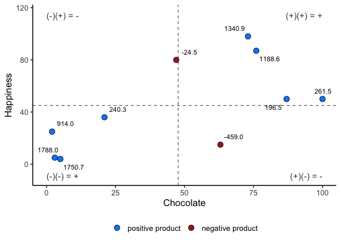
The formula above divides by \(N\), which is the population version, and that is what the table computes. R’s cov() and sd() divide by \(n-1\) instead, for a reason Chapter 3 explains. Dividing by \(n-1\) makes the covariance \(n/(n-1)\) times larger. It makes each standard deviation \(\sqrt{n/(n-1)}\) times larger, so the product of the two standard deviations is also \(n/(n-1)\) times larger. Pearson’s \(r\), defined below, divides the covariance by that product, so the factor cancels and \(r\) comes out identical either way:
\[\frac{\frac{n}{n-1}\,\text{cov}(X,Y)}{\sqrt{\frac{n}{n-1}}\,\sigma_X \cdot \sqrt{\frac{n}{n-1}}\,\sigma_Y} = \frac{\cancel{\frac{n}{n-1}}\,\text{cov}(X,Y)}{\cancel{\frac{n}{n-1}}\,\sigma_X \sigma_Y} = \frac{\text{cov}(X,Y)}{\sigma_X \sigma_Y}\] If you compute the covariance itself in R, though, expect a number 10/9 times the one in this table, about 11% larger, because the table has \(n = 10\).
The size of a covariance is hard to interpret. Just as variance is tied to squared units, covariance is tied to the scales of both variables. If happiness were scored from 0 to 10 instead of 0 to 100, every happiness deviation would be one-tenth as large, and so would the covariance, even though the relationship between chocolate and happiness would be the same. So a covariance of 719.7 tells us the sign of the relationship but not its strength. To compare strength across variables with different units or scales, we rescale the covariance, and the rescaled value is Pearson’s \(r\).
2.3.3 Pearson’s \(r\)
Pearson’s \(r\) is the covariance of \(X\) and \(Y\) divided by the product of their standard deviations. Its sign gives the direction of the relationship, it has no units, and it always falls between \(-1\) and \(1\):
- \(r=1\): perfect positive linear relationship
- \(r=0\): no linear relationship
- \(r=-1\): perfect negative linear relationship
Here “linear” means following a straight line, and \(r\) measures how closely the points follow one.
Values closer to \(\pm1\) indicate a stronger linear relationship. Values near \(0\) indicate a weak linear relationship or none.
One formula for Pearson’s \(r\) is
\[r = \frac{\text{cov}(X,Y)}{\sigma_X \sigma_Y}\]
Here \(\sigma_X\) and \(\sigma_Y\) are the standard deviations computed by dividing by \(N\), the same way the covariance was computed. The covariance is in chocolate units times happiness units, and \(\sigma_X \sigma_Y\) is in the same units, so dividing cancels them. Dividing by the standard deviations also keeps \(r\) between \(-1\) and \(1\).
For the ten people in the covariance table, the covariance is 719.7. Dividing by \(N\), the standard deviation of chocolate is 35.466 and the standard deviation of happiness is 32.419. So
\[\begin{aligned} r &= \frac{719.7}{35.466 \times 32.419} \\ &= \frac{719.7}{1149.764} = 0.63 \end{aligned}\]
That is a positive correlation, a little more than halfway from 0 to 1. For all 100 people in Figure 2.1, R gives \(r\) = 0.61, which matches the upward pattern in the scatter plot.
Table 2.8 sets the three steps that built the standard deviation beside the three steps that built Pearson’s \(r\).
| One variable | Two variables | |
|---|---|---|
| Sum | Sum of squares, \(SS = \sum (x_i - \bar{x})^2\) | Sum of products, \(\sum (x_i - \bar{x})(y_i - \bar{y})\) |
| Divide by \(N\) | Variance, \(SS/N\) | Covariance, \(\text{cov}(X,Y)\) |
| Rescale | Standard deviation, \(\sigma_X = \sqrt{\text{variance}}\) | Pearson’s \(r = \text{cov}(X,Y)/(\sigma_X \sigma_Y)\) |
NoteNote: The formulas for \(r\) are equivalent
You’ll see several algebraically equivalent formulas for Pearson’s \(r\), some easier for hand calculation, others more compact. They all produce the same result. In practice, you’ll compute \(r\) with software, so this chapter focuses on what \(r\) means and how to interpret it. Working through one example by hand shows where \(r\) comes from, which is why lecture walks through a full hand calculation before you run it in R during lab.
2.4 A first look at regression
Linear regression fits the straight line that best predicts one variable from another. It is closely tied to correlation, since the fitted line slopes up when \(r\) is positive and down when \(r\) is negative, and this section gives a first look at it.
Figure 2.6 shows the same three scatter plots as Figure 2.2, now with a fitted line added to each.
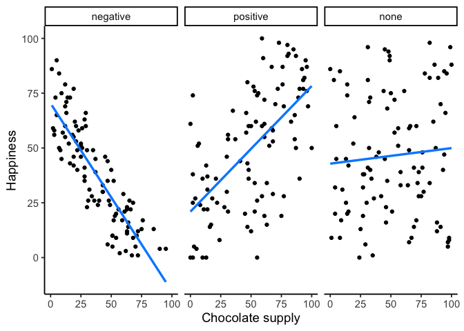
2.4.1 The best-fit line
Each panel now has a blue line. The best-fit line is the straight line that summarizes the pattern of dots with the least error. The chapter also calls it the fitted line or the regression line. The line slopes down in the negative panel, up in the positive panel, and is nearly flat in the no-correlation panel.
With one variable, we use the mean to describe central tendency in one dimension. With two variables plotted together, we need a two-dimensional equivalent. A line does that job. For each value of \(x\), the line gives the average \(y\) the pattern predicts, so it describes the average relationship across the cloud of points.
We could draw many lines through a scatter of points, but most would miss the pattern.
Most dots do not fall exactly on the line, so some error is inevitable. Figure 2.7 shows what that error looks like for the first 20 people in the chocolate and happiness data. A blue line runs through the black dots, and a short red vertical line drops from each dot to the line. The white circles on the line are the line’s predicted values. The red lines are residuals. A residual is the vertical distance from a data point to the fitted line, the observed \(y\) minus the \(y\) the line predicts.
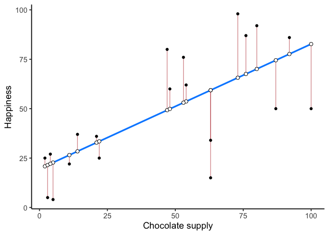
We choose the regression line to make the residuals as small as possible in total, measured by the sum of squared residuals. Square each residual, then add them together, the same way we built the sum of squares for one variable earlier in this chapter. A deviation is measured from the mean, and a residual is measured from the fitted line.
Figure 2.8 animates this directly, comparing the best-fit line (blue) to other possible lines (black) as the black line moves up and down. The red lines show the error between the black line and the data points at each position. The width of the gray band shows the typical size of those errors. The band is narrowest exactly when the black line reaches the best-fit line, then widens again as it moves away.
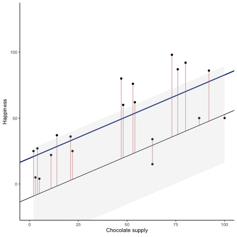
In Figure 2.9, each dot is one position of the black line. The x-axis is the shift in the line’s y-intercept (the height at which the line crosses \(x = 0\)), from \(-30\) to \(+30\), and 0 is the best-fit line. For each position we square the length of every red line from the animation above and add them up, giving the total sum of squared residuals. The dots start high on the left, fall to a minimum in the middle, and rise again on the right. The minimum is at 0.
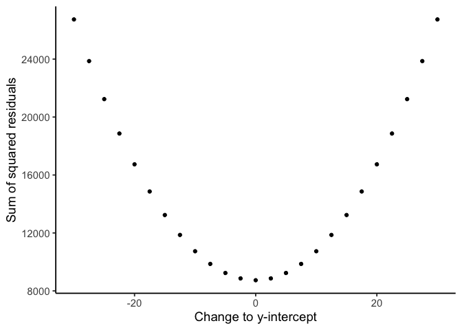
2.4.2 Computing the best-fit line
In principle, you could find the line that minimizes the sum of squared residuals by trying many lines and comparing their errors, but that is slow. Figure 2.9 tried 25 positions and only moved the line up and down, and a full search would also have to change its slope (how steeply it rises or falls). In practice, we let software identify the line with the smallest total error. R’s lm() function did this for every regression line drawn in this chapter’s figures.
Figure 2.10 shows seven \(x,y\) pairs with their fitted line. Chapter 9 returns to these seven points and computes the line’s slope and intercept by hand.
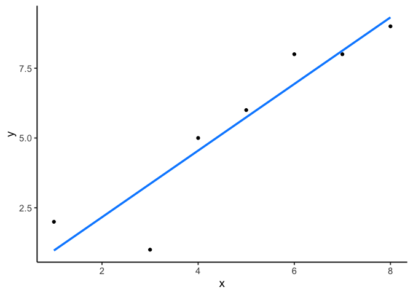
2.5 Ways a correlation can mislead
A common warning is that correlation does not imply causation. Interpreting correlations requires care, because the same number can arise from very different situations. This section covers random chance and sample size, nonlinear patterns, data whose shape a summary hides (Anscombe’s quartet), the direction of a causal link, and confounding variables.
2.5.1 Spurious correlation: chance alone can look convincing
Two measures that have nothing to do with one another can still show a positive or negative correlation by random chance, and with small samples this happens often, as the lottery game below shows. A spurious correlation is a correlation that does not come from a link between the two variables. Chance correlations like these are one kind, and correlations caused by a confounding variable (the last section of this chapter) are the other.
Imagine two independent participants, one at the North Pole and one at the South Pole. Each has a lottery machine containing balls numbered 1 through 10. Each participant randomly draws 10 balls, putting each ball back before the next draw, and records the numbers. The draws are independent, meaning one participant’s numbers have no effect on the other’s, so chance alone determines both sets of numbers.
Here is what the numbers on each ball could look like for each participant:
| Ball | North_pole | South_pole |
|---|---|---|
| 1 | 9 | 1 |
| 2 | 7 | 4 |
| 3 | 1 | 7 |
| 4 | 1 | 7 |
| 5 | 8 | 9 |
| 6 | 4 | 4 |
| 7 | 7 | 5 |
| 8 | 2 | 7 |
| 9 | 10 | 5 |
| 10 | 2 | 7 |
For these ten pairs of draws, Pearson’s \(r = -0.47\). That value says nothing about a relationship between the draws at the two poles, because we set up the game so that no relationship exists.
Figure 2.11 runs the game 10 more times. Each frame is one run, with the North Pole’s 10 numbers on the x-axis, the South Pole’s 10 numbers on the y-axis, and the fitted line. We built the game with no relationship, so we might expect a flat line every time. The line instead tilts up in some runs and down in others.
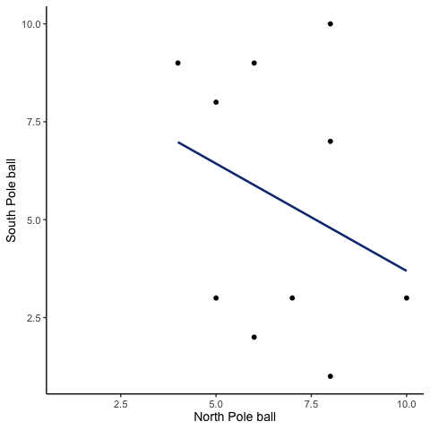
Monte Carlo: what chance produces.
We can use a computer to repeat the lottery game as many times as we like. A Monte Carlo simulation repeats a random process many times on a computer and records the outcome each time.
We ran the game 1,000 times. Each time, the computer generated 10 random numbers for the North Pole participant and 10 for the South Pole participant and computed the correlation between them. That gives 1,000 values of Pearson’s \(r\). Figure 2.12 sorts those 1,000 values into a histogram.
Before you look. Each bar in Figure 2.12 counts the runs whose \(r\) fell in one 0.1-wide interval. Decide how often you expect a game with no relationship built in to give an \(r\) above 0.5 or below \(-0.5\).
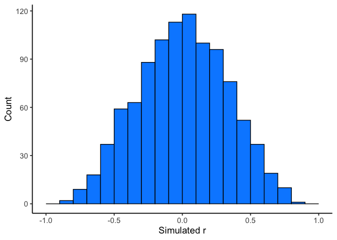
Each of the 1,000 values in Figure 2.12 is the \(r\) from one run of the lottery game, with 10 draws at each pole. Even though we built the game so that no relationship exists, 133 of the 1,000 runs gave a correlation above 0.5 or below \(-0.5\).
The chance window is the distribution of results that chance alone produces when a study with no real effect is repeated many times. Figure 2.12 is the chance window for the lottery game. When we compute a correlation in real data, we compare it with this window to judge whether chance alone could plausibly have produced it.
For example, with 10 pairs of values, if you observed \(r=0.1\), the histogram shows that such values are common in random data, so chance could easily explain it. An observed \(r=0.5\) is less common but still possible by chance. An observed \(r=0.95\), however, falls outside what chance typically produces, suggesting that something more systematic than chance produced the relationship.
2.5.2 Sample size and stability
So far, our lottery game has used 10 draws per participant, a sample size of \(n = 10\). With \(n = 10\), chance produces correlations from about \(-0.9\) to \(0.9\).
We can repeat the simulation at four sample sizes: each participant draws 10, 50, 100, or 1,000 numbers. At each size we run the game 1,000 times and record the correlation.
Figure 2.13 shows the resulting four histograms of Pearson \(r\) values.
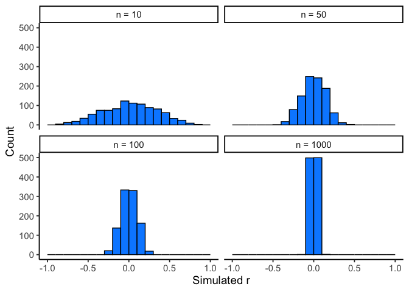
| Sample size | SD of the 1,000 values of \(r\) | Share beyond \(\pm 0.5\) | Share at or beyond \(\pm 0.2\) | Largest \(\lvert r \rvert\) |
|---|---|---|---|---|
| 10 | 0.33 | 14% | 57% | 0.87 |
| 50 | 0.15 | 0% | 17% | 0.50 |
| 100 | 0.10 | 0% | 4% | 0.30 |
| 1,000 | 0.03 | 0% | 0% | 0.11 |
Each histogram contains 1,000 values of \(r\), one per run of the game at that sample size, and Table 2.10 summarizes each one. With \(n = 10\), the correlations spread across nearly the whole range from \(-1\) to \(1\), and 14% of the runs gave \(r\) above 0.5 or below \(-0.5\). With \(n = 50\) or \(n = 100\), the spread narrows, but 17% and 4% of the runs still gave \(r\) at or beyond \(\pm 0.2\). With \(n = 1{,}000\), the largest \(\lvert r \rvert\) in 1,000 runs was 0.11. Larger samples shrink the range of correlations that chance alone produces, so a large \(r\) from a large sample is much harder to attribute to chance.
TipTip: Plan a larger n for a modest r
Bigger \(n\) narrows the chance window. If you expect a modest linear effect (e.g., |\(r\)| ≈ 0.2–0.3), plan for larger samples so random swings are less likely to mimic or mask the effect.
When there is a true correlation.
In Figure 2.14, we built a true correlation of 0.3 into the population (the full set of values the samples are drawn from, Chapter 3), then drew a new sample in every frame at each of the same four sample sizes. The true correlation is the correlation in the whole population. Each sample gives its own \(r\), which varies around the true value from sample to sample.
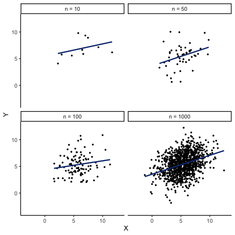
With \(n=10\), the regression line jumps around and occasionally even points downward, despite the underlying positive relationship. As the sample size grows, the line becomes more stable and consistently reflects the true positive slope. Sampling variability, the chance differences from one sample to the next (Chapter 3), still moves the line from frame to frame, but with larger samples the true correlation of 0.3 is much easier to detect.
Because we usually only have one sample, we can never know for certain whether our sample’s line is close to the true slope or is like one of the \(n = 10\) frames where the line points downward. The best protection is to collect more data.
2.5.3 Nonlinearity: when \(r\) misses real relationships
Consider a snake plant. Like most plants, it needs water to stay alive, but also needs the right amount of water. Imagine we grow 1,000 snake plants, each receiving a different amount of water per day, ranging from no water to extreme overwatering (say 1,000 teaspoons a day), and measure their weekly growth. Water affects plant growth, so we’d expect to see a correlation.
Plants given no water at all will eventually die, showing little or no weekly growth. With only a few teaspoons per day, plants may survive but grow only modestly. In a scatter plot, those cases would appear near the bottom left (low water, low growth) and rise upward as water increases. Growth continues to improve until a threshold is reached, beyond which excess water harms the plants. Severely overwatered plants also fail to grow and eventually die, just as those given no water do.
The scatter plot would form an inverted U or V, with growth rising to a peak as water increases and then declining with overwatering. A relationship like this can produce a Pearson’s \(r\) close to zero, even though water affects growth. The numbers in this example are invented, with growth built to peak at 500 teaspoons a day. Figure 2.15 illustrates this pattern.
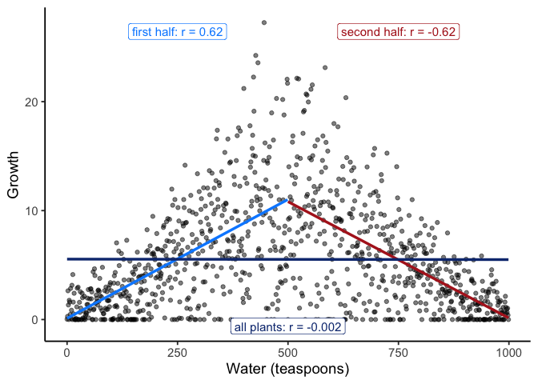
Growth rises and then falls as water increases, so the relationship does not run in one direction. When we compute Pearson’s \(r\) for these 1,000 plants, we get -0.002, very close to zero.
Pearson’s \(r\) measures how well a single straight line describes a relationship. An \(r\) near zero, when water does affect growth, means no single straight line describes this relationship. A nonlinear relationship is one that a straight line does not describe. The snake plant is an extreme case because the direction reverses.
In Figure 2.15, the first half of the data gives \(r = 0.62\), the second half gives \(r = -0.62\), and the full dataset gives \(r = -0.002\).
Plot the data before computing \(r\).
TipTip: A curved scatter needs a curved model
If the scatter shows a U-shape or other curve, a single straight-line correlation will mislead. Fit a curved model (for example, add a squared term, \(x^2\), to the model) or transform a variable (for example, take its logarithm) instead of reporting \(r\) alone.
2.5.4 Anscombe’s quartet
Everything so far has compressed a relationship into a number: a covariance, an \(r\), a slope. Francis Anscombe (Anscombe (1973)) built four datasets, now called Anscombe’s quartet, that share almost every statistic you would think to compute. He built them to show how much a single number can hide about the shape of the data.
Each panel in Figure 2.16 shows one dataset’s pairs of \(x\) and \(y\) values as a scatter plot.
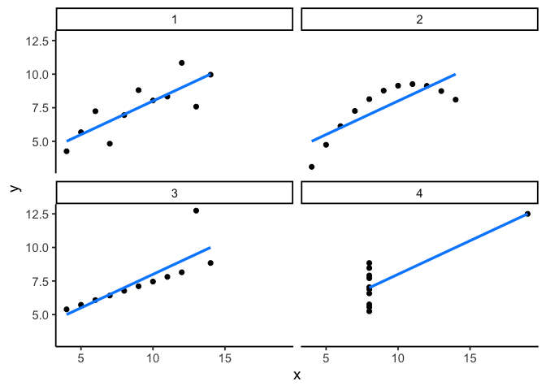
The four panels look nothing alike, yet their summary statistics match:
| Set | Shape | Mean of \(x\) | Variance of \(x\) | Mean of \(y\) | Variance of \(y\) | \(r\) | Fitted line |
|---|---|---|---|---|---|---|---|
| 1 | Linear cloud | 9.00 | 11.00 | 7.50 | 4.13 | 0.82 | \(y = 3.00 + 0.50x\) |
| 2 | Smooth curve | 9.00 | 11.00 | 7.50 | 4.13 | 0.82 | \(y = 3.00 + 0.50x\) |
| 3 | Straight line with one outlier | 9.00 | 11.00 | 7.50 | 4.12 | 0.82 | \(y = 3.00 + 0.50x\) |
| 4 | Ten points at \(x = 8\), one at \(x = 19\) | 9.00 | 11.00 | 7.50 | 4.12 | 0.82 | \(y = 3.00 + 0.50x\) |
Rounded to two decimals, all four datasets have the same mean and variance for \(x\), the same mean for \(y\), the same correlation, and the same fitted line. The variances of \(y\) agree to one decimal (4.12 or 4.13). (Anscombe built the four sets to agree closely, not exactly, so the values separate once you carry more decimals.) Only the scatter plots show that set 2 is a curve, set 3 has one outlier, and set 4 depends on a single point at \(x = 19\).
2.5.5 Causal directionality
The causal directionality problem arises when \(X\) and \(Y\) are causally linked but no outside knowledge, such as the physics of the system or which variable came first, settles the direction. Without that knowledge, \(r\) alone cannot tell you whether \(X\) causes \(Y\), \(Y\) causes \(X\), or both. For example, people who exercise more tend to report better moods. Exercise could improve mood, a better mood could make people more likely to exercise, or both could be true.
2.5.6 Confounding variables
A correlation can also arise from a confounding variable, a third variable that drives both of the variables you are looking at, creating an apparent relationship between them or inflating a real one. A confounder does this whether or not anyone measured it, and dealing with it starts with measuring it.
Now suppose we did not set the water ourselves. When we set the water, sunlight cannot affect how much water a plant gets. When we only record what owners do, it can. We survey snake plants in people’s homes and record how much each owner waters and how much each plant grows, but we ignore sunlight. If owners with sunny windows water more, and sunny plants also grow faster, we might credit water with growth that sunlight is producing.
The same issue appears in human data. Suppose we find that, across an elementary school, children with bigger feet read better. Shoe size does not improve reading. Age makes feet bigger, and age also improves reading. If we compared shoe size and reading ability without accounting for age, we would credit shoe size with an effect that comes from age. Figure 2.17 draws the arrows.
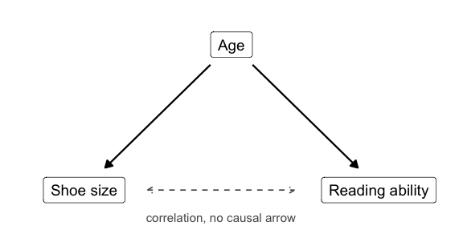
There are three ways to deal with a confounder you have measured, set out in Table 2.12. Comparing within subgroups, also called stratifying, splits the data into groups that share the same, or a similar, value of the confounder and checks whether the relationship still holds inside each one. If the relationship between shoe size and reading disappears within each age group, age was producing it. Matching applies the same idea to a comparison between two groups, pairing each unit in one group with a unit in the other that has a similar value of the confounder.
| Strategy | What it means | In the school example |
|---|---|---|
| Control for it statistically | Include the confounder in the model as an extra variable, called a covariate, so its effect is separated from the relationship you care about. Chapter 11 does this with ANCOVA. | Include age in the model, so shoe size is compared with reading ability among children of the same age. |
| Compare within subgroups (stratify) | Check the relationship separately within each group of similar confounder values. | Compare shoe size and reading ability only among children of the same age. |
| Match | Pair units across the two groups by their value of the confounder. | Pair each reading-app user with a non-user of the same age. |
Table 2.13 sets the two problems side by side.
| Causal directionality | Confounding | |
|---|---|---|
| What is going on | \(X\) and \(Y\) really are causally linked | A third variable drives both \(X\) and \(Y\) |
| What is unresolved | Which one causes which | Whether a third variable is producing the relationship |
| Example | Exercise and mood | Shoe size and reading ability, both driven by age |
| What would resolve it | A design where one variable is manipulated or measured first | Measure the third variable and control for it, or compare within subgroups |
An experiment settles both problems at once. When you set \(X\) yourself, \(X\) came first, which settles directionality. Random assignment to groups balances every third variable, measured or not, which settles confounding.
2.6 Chapter Summary
Why it matters. Correlation is how we quantify whether two variables move together. We use it to describe patterns (e.g., chocolate and happiness, water and plant growth) and to decide whether a relationship is worth modeling or acting on. Chapter 9 returns to the best-fit line and tests its slope.
Core ideas
- Variance and standard deviation. Deviations from the mean always sum to zero, so we square them. The variance is the mean of the squared deviations, and the standard deviation is its square root, back in the units of the data.
- Plot the scatter before computing \(r\). A scatter plot shows the direction of a relationship (up, down, none), whether it is straight or curved, and any outliers. If the pattern is curved, fit a suitable model (for example, add a squared term) or transform a variable instead of stopping at \(r\).
- Pearson’s \(r\) is covariance rescaled. Covariance measures whether deviations from each mean tend to align. Pearson’s \(r\) rescales covariance by the standard deviations so the result is unitless and bounded ([-1, 1]).
- Interpreting \(r\). The sign of \(r\) gives the direction, and its magnitude gives the strength of a linear relationship.
- Regression link. The best-fit line summarizes the average relationship. Residuals are the vertical gaps between data and the line. The line is chosen to minimize the sum of squared residuals.
- Chance alone can manufacture a correlation. Small samples can produce large |\(r\)| by accident, and larger samples shrink the “chance window” toward 0. A large \(r\) from a large sample is much harder to attribute to chance.
- Nonlinearity hides real effects. Curved relationships (e.g., too little or too much water harming plant growth) can yield \(r\) ≈ 0 even when the underlying effect is strong.
- Confounding. A third variable can create or inflate a correlation (e.g., sunlight affecting both watering patterns and plant growth, or age affecting both shoe size and reading). An experiment, which sets \(X\) and assigns units at random, settles both confounding and causal direction.